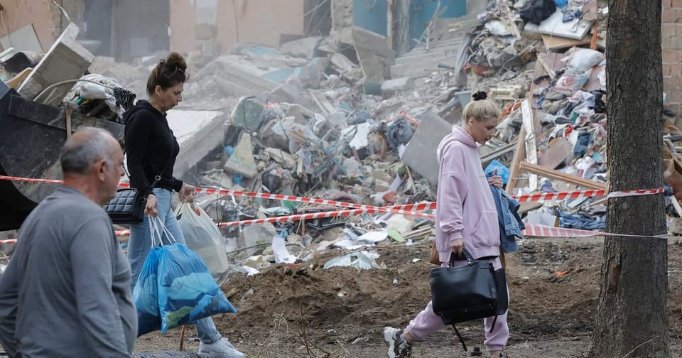

世界苦茶06月30日新闻 | 31条 | 俄发动对乌最大规模的空袭

俄发动对乌最大规模的空袭 | 美参院通过大美丽法案启动 | 特朗普称为TikTok找到买家 | 中配小微回国遭遇铁拳 | 中国回复日本水产进口
今日三条新闻分析
苦茶数据
美元兑人民币：7.16（昨日7.16，前日7.17）
美元兑日元：144.25（昨日144.88，前日144.54）
上证指数：3430（昨日3424，前日3453）
标普500指数：休市（昨日6173，前日6181）
比特币：108574（昨日108062，前日107431）
布伦特原油：67.55（昨日67.77，前日67.57）
中国新闻
• 沪昆高铁提速至350公里 ：7月1日起，中国上海至昆明高铁杭州东至长沙南段复兴号动车组列车，将常态化按时速350公里高标运行。据中新社报道，中国国家铁路集团运输部负责人介绍，今年以来，国铁集团对沪昆高铁杭长段实施安全标准示范线建设工程，对高速铁路各系统和整体性能进行了科学验证，各项指标均符合相关规定，为沪昆高铁杭长段复兴号动车组列车常态化按时速350公里高标运行提供了坚实保障。该负责人说，沪昆高铁杭长段复兴号动车组列车常态化按时速350公里高标运行后，将进一步压缩时空距离。
• 港特首顾问团成员调整 ：香港特区政府公布第二届特首顾问团成员，当中有三人未续任，包括长和集团主席李泽钜。综合《明报》和网媒“香港01”报道，港府上星期五公布第二届特首顾问团成员，34人名单中包括三名新成员，他们分别是“杭州六小龙”的强脑科技创始人兼首席执行官韩璧丞、宇树科技创始人王兴兴，以及国际货币基金组织前副总裁朱民。至于未再获任命的原有成员，包括李泽钜、华润集团前董事长傅育宁，以及2023年底离世的商汤科技创始人汤晓鸥。
• 吴小杰出任朝阳区书记 ：“70后”吴小杰任中共北京市朝阳区委员会书记。据“北京朝阳”微信公众号消息，北京市朝阳区星期六召开全区领导干部大会。会议宣布北京市委决定，称文献不再担任北京市朝阳区委员会书记、常委、委员职务，吴小杰任北京市朝阳区委员会书记，聂杰英任北京市朝阳区委员会委员、常委、副书记。公开资料显示，吴小杰1970年12月生，在职研究生。他曾任北京住总集团总经理助理、副总经理，北京市平谷区委常委、常务副区长，平谷区委副书记、区长等职，2022年任朝阳区委副书记、区长。
• 四川启动防汛三级响应 ：中国四川省个别地区将有特大暴雨，当地启动四级防汛应急响应，洪水灾害防御升级为三级响应。据封面新闻报道，气象预报显示，星期天8时至星期一8时，四川盆地各市阴天有阵雨或雷雨，雨量普遍中到大雨，部分地方有暴雨，局部大暴雨，个别特大暴雨，并伴有短时强降水、阵性大风等强对流天气；川西高原和攀西地区阴天间多云有阵雨或雷雨，其中阿坝州大部、甘孜州东部南部及攀西地区大部有中雨，局部大雨到暴雨。
• 上海乐高项目突发故障 ：正在试运营的中国上海乐高乐园乐高大飞车项目出现故障，乐园方面回应称，是骑乘设备检测到异常自动停止。据澎湃新闻报道，据一位被困市民介绍，星期六中午12时5分左右，设备启动后不久，整辆乐高大飞车由于发生故障，停在半空中。乐高乐园星期天对此回应称，出于安全性考虑，骑乘设备一旦检测到任何异常就会自动停止运行，乐园也会相应启动应急预案，立即安排游客疏散。经过全面排查，确认设施符合安全标准，乐高大飞车项目当天下午1时已恢复运营。
• 小微批村支书遭公安施压 ：因宣扬“武统”被台湾遣返回大陆的网红小微发视频批评村支书，她称事后接到公安来电施压。据台湾《上报》报道，小微返回贵州老家后，转型发布农村题材短视频。她发布视频批评官舟镇新场村书记“不办事”，抱怨自己至今未获得水库淹没土地的补偿金。小微星期六再度发声，称深夜接到公安来电施压。
亚太印太新闻
• 印尼电池项目启动引争议 ：印度尼西亚一项耗资59亿美元的大型电动车电池生产项目星期天破土动工。该项目由中国宁德时代支持，但遭到有关环境保护方面的质疑。法新社报道，印尼能源部长巴利尔说，将为该电动车电池项目在东部哈马黑拉岛的设施投资47亿美元，在西爪哇的设施投资12亿美元。总统普拉博沃在西爪哇卡拉旺举行的奠基仪式上说：“据我估计，这用不了多久，大概五到六年，我们就能实现能源自给自足。”国家电视台记者扎鲁宾，他与拉特克利夫进行通话，并同意随时通话讨论彼此感兴趣的问题。
• 赖清德宪法言论遭质疑 ：台湾总统赖清德星期天继续展开“国家团结十讲”，声称1946年通过的《中华民国宪法》，台湾没有派员参加。蓝营人士驳斥这一说法，批评赖清德为了罢免活动一直说谎。据台湾《联合报》报道，赖清德在新竹展开第三讲称，1936年的五五宪草或1946年通过的《中华民国宪法》，“台湾是没有派员参加的，一直到七次修宪，台湾人民才是修宪的主体”，建构了以台湾为主体的民主宪政体制，民主就是人民作主的宪政体制。国民党前发言人林家兴之后在脸书发文，指这一说法“是彻底的、百分之百的事实错误”，并说在五五宪草方面，“没有台湾人参与，废话，当时台湾还是日本帝国底下的殖民地”。
• 泰反对党领袖支持率领跑 ：泰国国家发展管理研究所的民意调查显示，大多数受访者认为反对党领袖纳塔蓬是首相职位最合适的人选，佩通坦的支持率则暴跌。《曼谷邮报》报道，国家发展管理研究所于6月19日至25日在泰国全国范围内对2000人进行了抽样调查。结果显示，人民党主席纳塔蓬是最受欢迎的首相候选人。受访者对他及其政党的支持率远高于执政的为泰党及其领导人佩通坦。31.48%的受访者希望纳塔蓬出任首相，因为他属于年轻一代，勇于表达意见和政治立场，并能提出清晰而现代的理念。 （翻评：就为了不让人民党执政，泰王和军政府可能也会继续支持为政党。）
• 印度战车节发生踩踏事故 ：印度东部一个宗教节日庆祝活动上发生踩踏事件，造成三人死亡，六人受伤。路透社报道，一名高级行政官员透露，事件发生在星期天黎明时分，当时数千名印度教信徒正聚集在奥迪沙邦普里参加一年一度的战车节庆祝活动。奥迪沙邦警察局长昆拉尼亚说：“事故造成三人死亡，六人受伤，伤者均已脱离危险。”
• 魏如萱获金曲奖女歌手 ：第36届台湾金曲奖颁奖典礼6月28日在台北小巨蛋举行。众所瞩目的最佳华语女歌手奖由魏如萱获得，她击败蔡健雅、戴佩妮、陈忻玥和Karencici，宣布得奖者的当下，镜头拍到魏如萱掩面喜极而泣，并与身旁的蔡健雅拥抱。她上台后开心大呼：“我也是一个疯女人，我衣服没有口袋，得奖感言小抄我藏在袜子里面”。她也兴奋地说：“我终于从蔡健雅的旁边走上来了。”魏如萱和新加坡歌后蔡健雅早有交手记录。两人曾同入围2012年和2022年金曲奖最佳华语女歌手奖，两次皆由蔡健雅得奖。魏如萱日前受访时笑说：“上次蔡健雅的幸运物是她妈妈，我那年的‘幸运物’就输了。”蔡健雅这回也带着母亲同行，但幸运之神这次眷顾的是魏如萱。她在台上俏皮地说：“今天换我当宇宙的宠儿！”魏如萱在庆功宴上说，在颁奖典礼上压抑想哭的心情，因为上次得奖时表情太狰狞，这次想好好地把话讲完。”
科技新闻
• TikTok 正在测试新的消息工具 “公告板” ：TikTok正在测试一种名为 “公告板” 的新消息工具，该社交网站周五向媒体证实。该功能允许品牌和创作者向其关注者分享公开的一对多消息。就像 Instagram 上的广播频道一样，只有公告板的创建者可以发布消息，而关注者只能留下表情符号反应。公告板支持文本、图片和视频帖子。该功能的理念是让创作者和品牌分享更新和幕后内容，并以更直接的方式与他们的关注者互动。例如，品牌和创作者可以在公告板上分享更新，而不是通过TikTok的动态或常规帖子发布更新。
• 日本最后一枚H2A火箭今日凌晨发射成功 ：日本三菱重工业公司29日凌晨1点33分从鹿儿岛县种子岛宇宙中心发射了国产大型火箭“H2A”50号机。这是最后一枚H2A火箭，16分钟后，把搭载的政府温室气体和水循环观测技术卫星“GOSAT (息吹) -GW”送入预定轨道，发射获得成功。负责运送政府的卫星和探测器的主力火箭任务已完全移交给2023年采用的“H3”。今后的课题是如何控制发射价格、提升可灵活应对包括民间在内的客户需求的国际竞争力。上述卫星在地球赤道附近约 670 公里高空与火箭分离，展开了太阳能电池板。已确认在正常运作。
• 马斯克公布脑机接口新进展，受试者增至7人 ：当地时间6月27日，埃隆·马斯克旗下脑机接口公司Neuralink发布了一段长达一小时的视频，展示了他们最新的研究成果及产品发展方向。Neuralink公布了未来几年的详细发展规划：在今年第四季度，Neuralink计划在言语皮层进行植入，目标是直接解码无声的“意图言语”。到 2026年，植入芯片的电极数量将提升至3000个，首位 “盲视”项目参与者也将加入，该项目通过摄像头捕捉画面，并将信息转化为电信号刺激视觉皮层，帮助失明者重获视觉。据介绍，目前Neuralink的受试者已经达到七人，其中涵盖四名脊髓损伤患者与三名肌萎缩侧索硬化症患者。
• 特朗普表示已经为TikTok找到买家 ：美国总统唐纳德·特朗普接受《福克斯新闻》采访时表示，已为短视频分享平台TikTok找到买家，是一群非常富有的人，他会在大约两星期内公布买家名单。特朗普本月较早时签署行政命令，再度延长中国字节跳动出售旗下 TikTok 在美业务的限期90日，直至9月17日。TikTok当时发声明，感谢特朗普的领导和支持，确保TikTok继续可用。在中国北京，外交部上个月回应有关TikTok的提问时表示，中方将依据中国的法律法规，处理相关问题，美方应为中国企业在美经营，提供开放、公平、公正和非歧视的营商环境。
财经新闻
• 法国吁延美欧谈判期限 ：法国财政部长呼吁将欧盟与美国贸易谈判延长至7月9日的最后期限之后，以达成更有利的协议。路透社报道，法国财政部长隆巴尔在星期天发表的采访中告诉《论坛报》：“我认为我们将与美国达成协议。”“关于最后期限，我希望再次推迟。我宁愿推迟达成一项好协议，也不愿在7月9日达成一项坏协议。”
• VinFast越南新厂投产 ：越南电动车制造商VinFast在本土的第二家工厂星期天投产。路透社报道，VinFast在一份声明中说，新工厂位于中部河静省，初始年产能为20万辆，占地36公顷。VinFast位于北部海防市的旗舰工厂明年的产能计划达到95万辆。
• 中国稀土高管调整 ：中国稀土集团星期天公布，旗下上市公司“中国稀土”部分董事、高管职务调整属于正常人事安排，相关人员职务调整后仍在中国稀土集团其他岗位任职。集团在微信公众号发声明说：“本次‘中国稀土’部分董事、高管职务调整系中国稀土集团和‘中国稀土’根据工作需要，为优化公司治理结构、提升管理效能，严格按制度及监管规定开展的正常人事安排，程序合规透明，相关人员职务调整后仍在中国稀土集团其他岗位任职。”当前，中国稀土集团和“中国稀土”各项工作未因相关人员变动受到影响。中国稀土上星期一宣布，闫绳健以工作原因为由，提请辞去公司总经理职务。闫绳健辞职后继续担任公司中共党委书记、董事等职务。
• 日水产进口部分恢复 ：中国海关总署6月29日公告，撤销2023年全面禁止日本水产品进口的排海反制措施，即日实行。产地在福岛等10都县以外的日本水产品恢复进口，水产品生产企业需重新申请在华注册，自完成注册登记之日起恢复贸易。进口申报时需提交日本官方出具的产区证明、放射性检测合格证明。
• 泡泡玛特假货泛滥遭批 ：中国潮玩品牌泡泡玛特旗下毛绒产品Labubu全球爆火，假货也随之泛滥，中国官媒发文称，亟需构建全方位、多层次的知识产权保护体系，为原创潮玩筑牢防护屏障。《经济日报》星期天发表题为《别让潮玩市场成假货重灾区》的评论文章。文章指出，热门潮玩IP遭遇侵权已非个例，从一比一复刻的高仿版到偷换概念的山寨设计，乱象背后暴露出潮玩领域知识产权保护体系仍存在薄弱环节。若任由侵权之风蔓延，潮玩IP将沦为假货重灾区。
俄乌战争
• 乌宣布退出渥太华公约 ：乌克兰总统网站星期天说，总统泽连斯基已签署法令，宣布乌克兰退出禁止生产和使用杀伤人员地雷的《渥太华公约》。路透社报道，泽连斯基在网站上发布的法令称：“支持乌克兰外交部提出的退出1997年9月18日《关于禁止使用、储存、生产和转让杀伤人员地雷及销毁此种地雷的公约》的提议。”乌克兰于2005年批准了该公约。
• 美俄情报首脑保持联络 ：俄罗斯情报部门负责人纳雷什金星期天说，他已与美国中情局局长拉特克利夫通话，并同意随时通话。路透社报道，美国中情局和俄罗斯对外情报局一直是激烈的竞争对手。在2022年俄罗斯入侵乌克兰后，双方都曾公开招募特工。对外情报局局长纳雷什金告诉克里姆林宫
• 乌飞行员击落导弹后殉职 ：乌克兰军方星期天说，一名乌克兰飞行员在击退大规模俄罗斯夜间导弹和无人机袭击时丧生，其驾驶的F-16战斗机也坠毁。路透社报道，乌克兰空军在Telegram上说：“飞行员使用了所有机载武器，击落了七个空中目标。在击落最后一个目标时，飞机受损并开始下降。”军方说，飞行员竭尽全力驾驶战机离开了定居点，但未能及时弹射逃生。这是俄乌战争期间坠毁的第三架F-16战机。
• 俄朝文化合作“空前高度” ：俄罗斯文化部长柳比莫娃率领代表团访问朝鲜，并称赞俄罗斯和朝鲜之间的文化合作达到了“前所未有的高度”。路透社报道，柳比莫娃星期六率领由125名演员组成的代表团访朝鲜。她在社交媒体平台Telegram发文称，未来几天将在朝鲜首都举办一系列音乐会和讲座。代表团成员包括来自皮亚特尼茨基合唱团，以及格热利舞蹈团）的演员。
• 俄对乌发动最大空袭 ：乌克兰空军6月29日说，俄军28日晚至29日凌晨使用477架无人机、“匕首”高超音速导弹、“伊斯坎德尔”导弹等多种类型共60枚导弹，向乌境内发动大规模空袭。乌军共拦截475个空中目标，其中包括39枚导弹，乌境内6个地点遭到袭击。空军一架F-16战机在击落空中目标时受损坠毁，飞行员阵亡。乌克兰空军表示，这是俄罗斯自全面入侵以来对乌克兰最大规模的空袭。
国际新闻
• 内坦亚胡作证被法院推迟 ：以色列耶路撒冷地区法院星期天推迟了总理内坦亚胡在贪腐案审判中的作证。此前，内坦亚胡在美国总统特朗普的支持下请求推迟作证。这项裁决由总理所属政党发布。法新社报道，耶路撒冷地区法院在其裁决中说：“根据给出的解释……我们部分接受请求，并暂时取消内坦亚胡原定于本周举行的听证会。”内坦亚胡的律师曾请求法院 免除他未来两周的作证，以便他能够专注于与伊朗停火后以及以色列人质被扣押的加沙地带持续战火中的安全问题。
• 以军令撤离加沙北部 ：以色列军方星期天命令巴勒斯坦人撤离加沙北部地区，升级与哈马斯的战斗。与此同时，美国总统特朗普呼吁结束战争，并再次努力促成停火。路透社报道，特朗普星期天在“真相社交”平台上发帖称：“在加沙达成协议，救回人质。”以色列总理内坦亚胡原定于星期天就以色列攻势的进展举行会谈。一名高级安全官员说，军方将告知他，此次行动已接近目标，扩大战斗可能会危及剩余的以色列人质。
• 伊袭监狱致71死伊朗指责 ：伊朗司法部发言人贾汉吉尔说，以色列早前袭击位于伊朗首都德黑兰的埃文监狱，造成71人死亡。路透社报道，贾汉吉尔星期天在司法部新闻媒体Mizan的讲话中说：“在以色列对埃文监狱的袭击中，共有71人遇难，包括行政人员、服兵役的青年、被拘留者、探望他们的被拘留者家属，以及居住在监狱附近的邻居。”以色列6月23日袭击德黑兰伊朗多个地区，包括最臭名昭著的监狱，这里关押着政治犯、反对派和外国嫌犯等。此举表明以色列的目标已从军事和核设施，扩大到伊朗统治体制的象征。
• 加国要求海康停止运营 ：渥太华以国安为由要求海康威视在加拿大全面停止运营，海康威视回应称，加政府有关国安的指控毫无根据。据中新社报道，海康威视加拿大公司当地时间星期六发声明，对加政府的决定表示强烈反对，并深表担忧。声明称，加政府有关国家安全问题的指控毫无根据。其决定罔顾事实，缺乏程序公正和透明。
• 美参议院启动税案辩论 ：美国参议院以微弱优势，通过美国总统特朗普的减税和支出法案的程序性投票，目前正对法案展开辩论。路透社报道，参议院星期六晚上，以51票对49票勉强通过启动辩论的动议。共和党内部早前出现分歧，副总统万斯亲自与持不同意见的共和党议员谈判，经过数小时僵持后才达成投票结果，但仍有两名共和党人投下反对票。 （翻评：这意味着之后只需要简单多数，大美丽法案就通过了。）
• 法国公园海滩全面禁烟 ：为了保护儿童免受二手烟的伤害，法国宣布正式在海滩及公园禁烟。法新社报道，这项禁令于星期六在政府公报上公布，并于星期天生效。卫生部此前宣布，这项规定最初预计将于下星期二生效，但官方公报的公布意味着生效时间已提前。